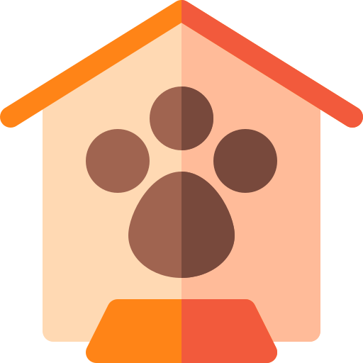

-
CuidaPet
Un espacio para lo que vos y tu (o futura) mascota necesiten.
Mas Informacion
Tenemos informacion sobre:

-
Veterinarias
Buscamos acercarte la informacion sobre las vereterinarias de Comodoro Rivadavia, sus horarios de atencion y su ubicacion.
Mas Informacion
Castraciones
>Lugares en Comodoro Rivadavia, donde se realizan estirilizaciones, en campañas de castracion masiva o sitios donde atienden profesionales. Consejos para antes y despues...
Mas Informacion

-
Fundaciones
Informacion sobre las cedes, los contactos de las fundaciones que se dedican a ayudar y cuidar animales abandonados, callejeros o con condiciones especiales.
Mas Informacion